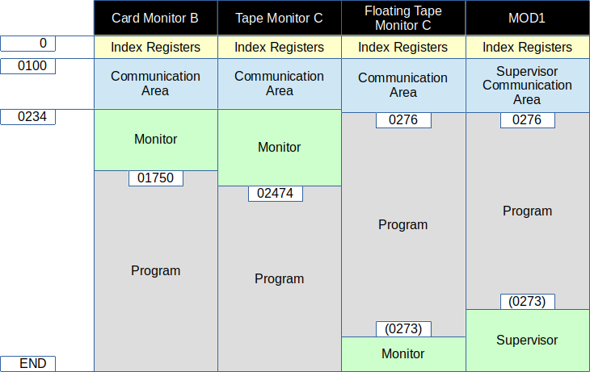

TAPE MONITOR C
This implementation of Tape Monitor C is mostly complete, some
features are not implemented. These features are represented via the
communications area, which is located at 0100-0233 (octal).
The following are functional to the extent described here.
NOTE! When making changes to the communication area, existing
punctuation MUST be preserved.
- Program Name
- Locations 0104-0111 (octal) in the communications area contain
the program name of the last segment card loaded.
For search features, this field may be set to the desired program name to be loaded.
- Segment Name
- Locations 0112-0113 (octal) in the communications area contain
the segment name of the last segment card loaded.
For search features, this field may be set to the desired segment name to be loaded.
- Visibility Mask
- Locations 0161-0166 (octal) in the communications area contain
the visibility mask. Default is 0400000000000, "A".
- Revision Number
- Locations 0101-0103 (octal) in the communications area contain
the revision number of the last segment card loaded.
- Return for Normal Call
- A program may branch to location 0202 (octal), in 3-char address mode,
to effectively exit and return to monitor control.
The monitor will start loading the next program, according to parameters
in the comunications area.
- Call Method
- Location 0100 (octal) contains the call method.
000 is to retrieve call cards from the card reader.
001 is to use call parameters from the communications area (manually entered).
- General Return Address
- A program may branch to the address in location 0213 (octal), in 3-char address mode,
to effectively exit and return to monitor control.
The monitor will halt and await operator instructions/actions.
- Fixed Start 0
- A program may branch to location 0126 (octal), in 3-char address mode,
to effectively exit and return to monitor control.
The monitor will halt and await operator instructions/actions.
This is also a convenient way to return to the monitor from the front panel (or console).
For example, type "A 77 0000126" on the console, press 3-char address mode, and press RUN.
- Tape Drive
- Location 0114 (octal) in the communications area contains
the tape drive number, 0-7.
- Search Mode
- Location 0157 (octal) in the communications area contains
the search mode key. It defaults to 077 (octal) and is reset by the
General Return. The following search mode keys (octal) are implemented:
- 001 - Load Nth segment, as specified by the Relative Position field.
- 000 - Load segment by Segment (same program).
- 020 - Load segment by Program/Segment.
- 040 - Load segment by Segment/Visibility.
- 060 - Load segment by Program/Segment/Visibility.
- Relative Position
- Location 0156 (octal) in the communications area contains
the relative position for Search Mode 001.
Default is 001, which indicates that the next segment is to be loaded
(same effect as Search Mode 077).
- Start Mode
- Location 0160 (octal) in the communications area contains
the start mode key. This directs the monitor what to do after
loading a segment. The following are implemented:
- 'N' - (045 octal) Branch to the starting location of the program.
- 'R' - (051 octal) Return to the calling program
(only valid when using Return for Normal Call).
- anything else - Halt with SR=starting location of the program (non-standard behavior).
- Search Direction
- Location 0152 (octal) contains the search direction.
This is usually not specified, the search will proceed forward until the end of the tape,
then search backward to the beginning.
- 022 - search forward (then backward)
- 023 - search backward
- Halts
- The following halts are implemented:
- 1 - (AAR=0124 BAR=017001) Boot loader is awaiting customization of visibility at locations
0124-0131 (octal).
Alter communication area if desired, load BRF decks if needed, press RUN.
- 3 - (AAR=0 BAR=017002) Monitor is awaiting commands.
Alter communication area if desired, load BRF decks if needed, press RUN.
- 8 - (AAR=0 BAR=014011) Monitor was not able to locate the program.
Note that conditions normally associated with "halt 9" will
cause "halt 8" instead.
BOOTSTRAP
The tape image containing Card Monitor C (only)
is named "brtboot.mti". This is normally not used, rather
an image is created from this with program segments appended.
This procedure uses the tape PCU address "40".
If the tape control is at a different PCU address, substitute
that PCU in the instructions.
- Insert "brtboot.pcd" in tape drive 0.
- Add any call cards to the card reader hopper.
- Press INITIALIZE
- Enter 040 in Control and 0000000 in Address and press BOOTSTRAP,
or on the console type "B 40 0000000". This loads the "1HDR " record, which is not used.
- Enter 040 in Control and 0000000 in Address and press BOOTSTRAP,
or on the console type "B 40 0000000". This loads the bootstrap record.
At this point, the tape PCU address may be entered, if something other than 040.
Locations 065, 073, and 0101 (octal) must be updated with the desired PCU.
- Press RUN. This gets to "halt 1".
- Press RUN. This gets to "halt 3".
At this point, the system should halt with AAR=0 and BAR=017002 (octal).
The monitor is now ready for operation.
EXAMPLE
This example uses a set of "Hello World" programs, each having a different
name that corresponds to its relative position in the tape image
("HELLO1" is the first, "HELLO5" is the 5th/last).
All these programs have the segment name "01".
These programs, with the bootstrap, are assembled into the tape image "test1.mti".
This example uses the console "control mode", but the equivalent tasks may
be performed using the front panel.
- Load "test1.mti" on tape drive 0.
- Load "calls.pcd" in the card reader hopper.
- Press INITIALIZE.
- Type "B 40 0000000" to skip "1HDR ".
- Type "B 40 0000000".
- Press RUN.
- (optional) Confirm "halt 1" by typing "P 70" and seeing "0017001".
- Press RUN.
- (optional) Confirm "halt 3" by typing "P 70" and seeing "0017002".
- Press RUN to start reading call cards. The first in "HELLO3", and the
message "HELLO WORLD, I AM HELLO3/01" should appear on the console.
- Press RUN to read the next call card. This is "HELLO5".
- Press RUN to read the next call card. This is "HELLO3".
- Press RUN to read the next call card. This is "HELLO1".
- Press RUN to read the next call card. This is "HELLO4".
- Press RUN to read the next call card. This is "HELLO2".
CALL CARDS
Call cards may be created using the tools utility "callcard", which will append
new call cards to the specified "pcd" file. As an alternative, the KeyPunch simulator
may be used to create call cards manually. Call cards have the following format:
- Cols 1-6 - Program name
- Cols 7-8 - Segment name
- Col 9 - Tape Drive number, 0-7
- Cols 10-17 - Halt name (not implemented)
- Col 18 - '*', required to recognize the card as a call card
PROGRAMS
Available programs are in the "hw2000/programs/bin" directory
on the github repository.
Mag Tape program images generally need to be assembled into BRT
(Binary Run Tape) images, for example using the tool "brtcat".
APPENDIX
Comparison of memory usage by monitors:
